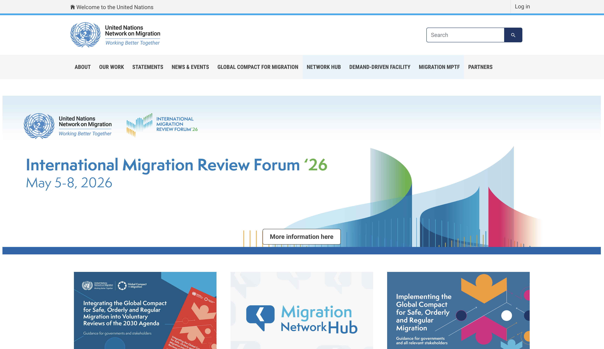

01 / 10
UN Migration Network Hub

Lead technical architect
The central digital platform for the UN system’s engagement on the Global Compact for Migration. It integrates dozens of UN agencies and partners in one secure Drupal 10 ecosystem serving 195 member states and their delegations.
migrationnetwork.un.org →Detail
- Contribution
- Architected the platform from the ground up, designing infrastructure for mission-critical workloads. Led technical strategy for custom module development, continuous security patching and zero-downtime version upgrades, coordinating distributed development teams across time zones.
- Hard problem
- A federated governance model that lets 195 member states and dozens of agencies publish into shared surfaces without data conflicts, each with its own mandate, review chain and provenance requirements.
- Recognition
- Formal appreciation from IOM Director General António Vitorino for strategic technical contributions at the International Migration Review Forum 2022.